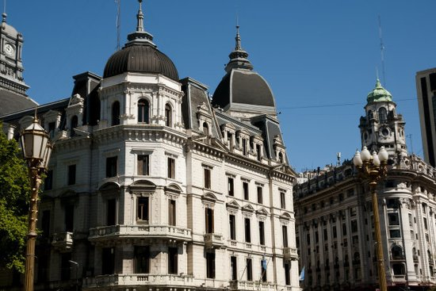
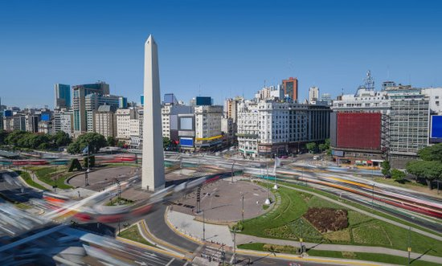
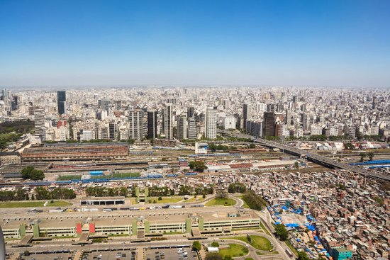

morly旅游网
一说阿根廷，你肯定想到了足球，梅西，想过去美丽的阿根廷吗？
阿根廷是南美洲国家联盟、20国集团成员和拉美第三大经济体。阿根廷是世界上综合国力强的发展中国家之一。阿根廷也是世界粮食和肉类的主要生产和出口国之一。
位于南美洲南部，面积2,780,400平方千米（不包括与英国有主权争议的马尔维纳斯群岛、南乔治亚岛和南桑威奇群岛以及南极地区，下同），领土居世界第八位，为拉丁美洲的第二大国，仅次于巴西。东濒大西洋，南与南极洲隔海相望，西同智利接壤，北接玻利维亚、巴拉圭，东北部与巴西和乌拉圭为邻，陆上边界线长25,728公里，海岸线长4,000余公里。
阿根廷地势由西向东逐渐低平。西部是以脉绵延起伏、巍峨壮丽的安第斯山为主体的山地，东部和中部的潘帕斯草原是著名的农牧区；北部主要是格兰查科平原，多沼泽、森林；南部是巴塔哥尼亚高原。主要山脉有奥霍斯·德萨拉多山、梅希卡纳山。阿空加瓜山海拔6,959米，为南半球和西半球最高峰。
布宜诺斯艾利斯
阿根廷首都，位于阿根廷东部沿海的拉普拉塔河的河口右岸，全市分1个联邦区、19个城郊区，总面积达3885平方公里，是南美洲第二大城市（仅次于巴西圣保罗）。
卡塔马卡省
除西北部为普纳荒漠高原外，安第斯山纵贯西部，最高峰奥霍斯-德尔萨拉多山，海拔6，885米，中部和东部则为前科迪勒拉山脉和潘帕斯山脉。山间多谷地和盐沼。多内流河。气候干燥，降水量不足300毫米。
查科省
为南美国家阿根廷二十三省之一省，位于阿根廷北部(如右图之4位置)，该省首府为雷西斯滕西亚(Resistencia)。面积 99,633 km²，人口 984,446 (2001) 。平原。中西部副热带气候，干燥炎热，夏季气温可超过40℃。PARANA和PARAGUAY两河地区湿润。

丘布特省
LOS ALERCES 国家公园（有三千年历史、六十米高的树，钓鱼），MADRYN港（潜水），VALDES半岛，PUNTA TOMBO（海生植物），PIRAMIDE 港（观鲸鱼），ESQUEL（探险旅游，滑雪），GAIMAN，TREVELIN（WELSH 茶室）
 内容整理至网络，如有侵权，请联系我们！1255394075@qq.com